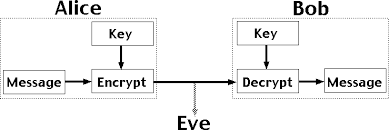
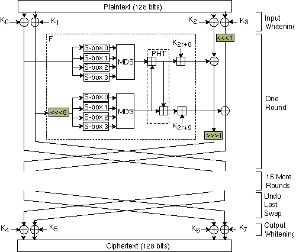

Cryptography
For best security, knowledge of cryptography is essential
Here you can find cryptography methods
RSA
The Rivest-Shamir-Adleman algorithm is an asymmetric algorithm that uses a public key and a private key. The public key is shared with anyone while the private key is shared with no one.
Implementation
The RSA algorithm can be used for e-mail encryption.
Vulnerability
If RSA public keys are generated with poor randomness, they are vulnerable to a factoring cyberattack, which could allow bad actors to crack the primary key.
Diagram
{kind=link}
AES
The AES or Rijnadel Algorithm is a symmetrical block cipher algorithm that takes plain text blocks of 128 bits and converts them to cipher text using keys of 128, 192, and 256 bits. The text goes through n number of rounds of encryption of different key sizes for added security.
Implementation
The AES algorithm is considered a security standard worldwide. It is used in payment applications, message sender validations, and random number generation or hashing. U.S. government entities use AES for encrypted communications and secure data storage.
Vulnerability
AES is virtually impenetrable using brute-force methods. However, when the keys are shared over an unsecure connection, they are exposed. Once a hacker has these keys, the algorithm is essentially useless.
Diagram

Twofish
Twofish is a symmetric key algorithm that uses key sizes of 128, 192, or 256 bits. The distinguishing characteristic of Twofish is that it uses pre-computed, key dependent subsitution boxes (S-boxes). The S box hides the relationship between the key and the cipher text.
Implementation
Twofish is not as popular as AES, but some products use it. These include GNU Privacy Guard, Pretty Good Privacy, TrueCrypt and password managers.
Vulnerability
Twofish is vulnerable to side-channel attacks due to their pre-computed, key dependent S-boxes.
Diagram
{kind=link}
Which cryptography method should I choose?
All of the mentioned cryptography methods work great for a variety of applications. The algorithm you should implement in your systems depends on your application security needs.